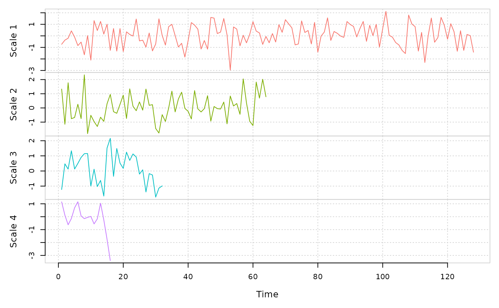

Calculation of the coefficients for the discrete wavelet transformation
A field<vec> that contains the wavelet coefficients for each decomposition level
Performs a level \(J\) decomposition of the time series using the pyramid algorithm. The default \(J\) is determined by \(floor\left(log_2 \left(length\left(x\right)\right)\right)\)
set.seed(999)
x = rnorm(2^8)
ret = dwt(x)
summary(ret)
#>
#> Results of DWT using haar filter with 7 levels:
#> Displaying only the first 6 coefficients...
#> Level 1 Wavelet Coefficients
#> -0.7288994 -0.3713113 -0.204154 0.4326554 -0.108371 -0.8425081 ...
#> Level 2 Wavelet Coefficients
#> 1.329777 -1.15106 1.7741 -0.7581617 -0.6710026 0.2598958 ...
#> Level 3 Wavelet Coefficients
#> -1.223201 0.4721952 0.1247242 1.335635 0.1302106 0.4989655 ...
#> Level 4 Wavelet Coefficients
#> 1.14869 0.1209628 -0.6243381 -0.1415789 0.6930248 1.155734 ...
#> Level 5 Wavelet Coefficients
#> 0.2853548 1.73621 0.7449743 0.4771237 1.236138 -0.2320687 ...
#> Level 6 Wavelet Coefficients
#> 0.5952832 -1.373433 -1.327617 0.08159036 ...
#> Level 7 Wavelet Coefficients
#> -0.1167127 -1.287948 ...
plot(ret)
